Tu dashboard,
paso a paso
Cómo recibir y confirmar las reservas de tu página, ver cuánta gente la visita y de dónde llega, desde la compu o el celular.
app.taparuba.com
Versión octubre 2026
Versión octubre 2026
Powered by
Cómo recibir y confirmar las reservas de tu página, ver cuánta gente la visita y de dónde llega, desde la compu o el celular.
Las imágenes del dashboard muestran reservas y visitas de ejemplo. Tus números y tus clientes van a ser otros.
Tu página web tiene un reservador de 5 pasos. El cliente elige el paquete, el barbero, el día y el horario, deja su nombre y toca Confirmar por WhatsApp. En ese momento pasan dos cosas a la vez:
Además, cada vez que alguien abre tu página se cuenta una visita. En el dashboard ves cuántas personas entraron, desde qué celular o compu y de dónde llegaron: Instagram, Google, Facebook o directo.
| Tu página web | Muestra los paquetes y precios, toma la reserva y abre WhatsApp. Funciona sola las 24 horas. |
| Es donde hablás con el cliente y confirmás el turno. Es tu aviso de que entró una reserva. | |
| El dashboard | Guarda todas las reservas en una lista ordenada y te muestra las visitas de la página. Entrás en app.taparuba.com. |
| Tap Aruba | Mantiene la página y el dashboard, y hace los cambios que pidas: precios, horarios, fotos y textos. |
Así se ve el reservador en el celular, que es desde donde reserva casi todo el mundo. Conviene conocerlo para poder ayudar a un cliente que se traba.


Tap Aruba te manda por WhatsApp un link para crear tu contraseña. Ese link sirve una sola vez. Las pantallas para entrar están en inglés; adentro, el dashboard se pone en español (paso 3).
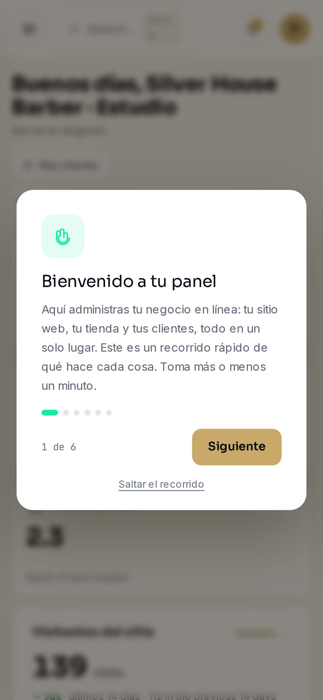
Una vez que entraste, el dashboard te deja la sesión abierta en ese aparato. Solo te vuelve a pedir la contraseña si tocás Cerrar sesión.
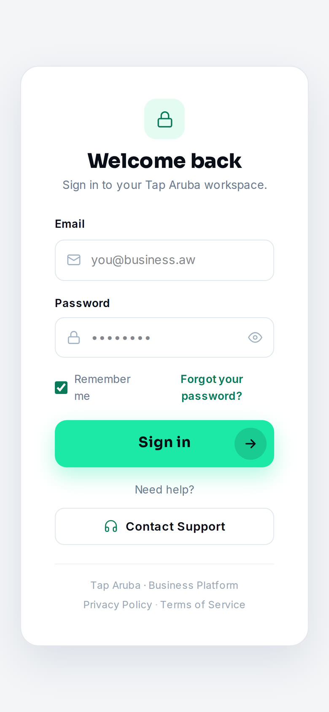
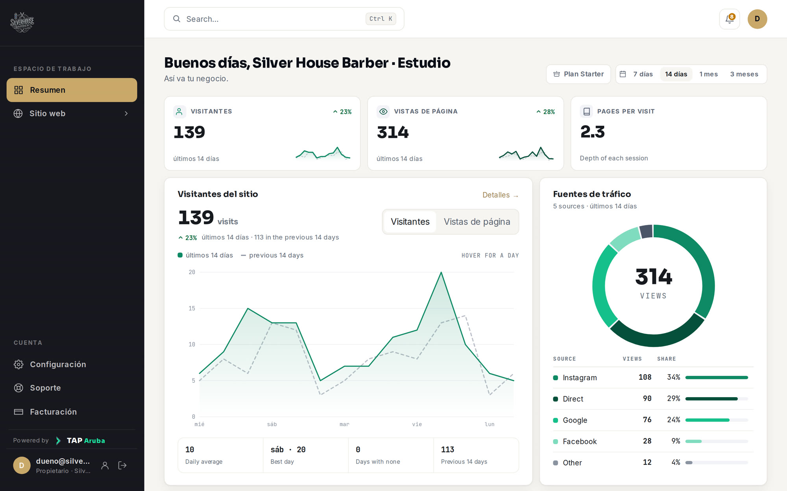
| Resumen | La pantalla de inicio. Muestra las visitas de tu página, de dónde llegan y la actividad reciente. |
| Sitio web | Todo sobre las visitas de los últimos 30 días: cuántas personas, qué miraron y desde dónde. |
| Clientes potenciales | Las reservas que hicieron en tu página. Está adentro de Sitio web: tocá la flechita al lado para verlo. |
| Configuración | El idioma, el modo claro u oscuro, los datos del negocio y la guía. |
| Soporte | Para pedirle cambios o ayuda a Tap Aruba, por WhatsApp o con un ticket. |
| Facturación | Tu plan con Tap Aruba. |
| La campanita | Arriba a la derecha. Te muestra las reservas de los últimos 7 días, con un número cuando hay nuevas. |
| Tu foto o iniciales | Arriba a la derecha: Tu perfil (tu nombre y tu contraseña) y Cerrar sesión. |
El trabajo del día pasa por WhatsApp. El dashboard te sirve para no perder ninguna reserva y para ver cómo le va a tu página.
Abrí Clientes potenciales. En Nuevos están las reservas que entraron desde la última vez. Fijate que todas tengan su respuesta en WhatsApp.
Es una reserva de la página: trae paquete, barbero, día, hora y un código como SH-1410-1100. Mirá tu agenda y respondé confirmando, o proponé otro horario.
Si en el dashboard hay una reserva que nunca te llegó por WhatsApp, el cliente no tocó Enviar. Si dejó su celular, escribile vos: es alguien que casi reserva.
Archivá las reservas que ya atendiste, así en Nuevos solo queda lo pendiente. Una vez por semana mirá Resumen para ver cuánta gente entró a tu página.
Arriba a la derecha, la campanita muestra con un número cuántas reservas entraron desde la última vez que la abriste. Tocala para ver la lista de la última semana: New lead quiere decir “nueva reserva”. Tocá una y vas directo a esa reserva.
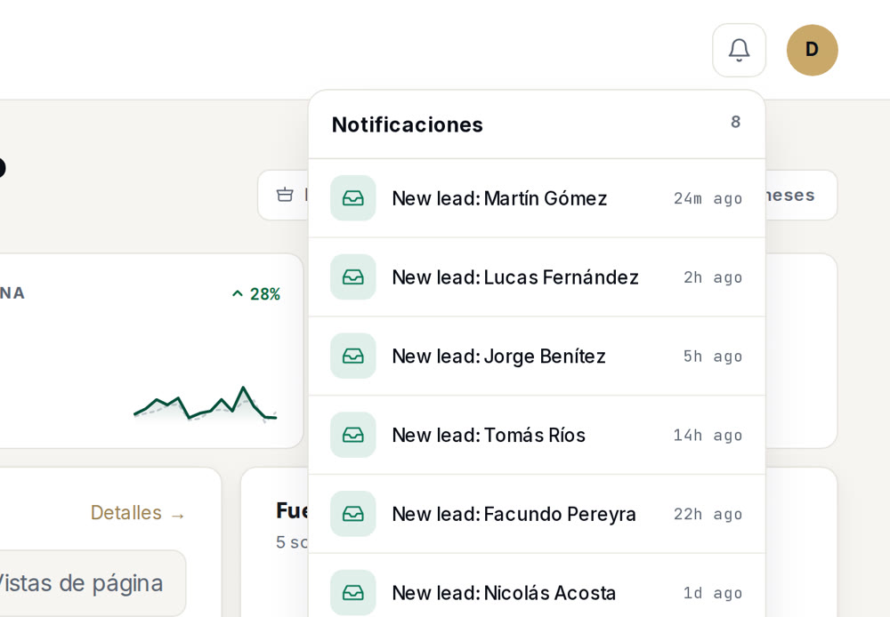
El mensaje llega a tu WhatsApp del negocio (+54 11 3697-0220) y siempre tiene la misma forma, con todo lo que eligió el cliente.
Fijate que ese día y horario estén libres. La página no sabe qué turnos diste por teléfono o en persona.
| Confirmar | “¡Hola [nombre]! Te confirmo el turno: [día] a las [hora] con [barbero]. Te esperamos en Av. La Plata 1185 💈” |
| Otro horario | “¡Hola [nombre]! A las [hora] ya tenemos turno. ¿Te sirve a las [hora 1] o a las [hora 2]?” |
| Cancelar | “¡Hola [nombre]! Perdón, ese día no vamos a poder atenderte. ¿Querés que te busquemos otro día?” |
Acá queda guardada cada reserva que hicieron en tu página, la más nueva arriba. Para llegar, tocá Sitio web en el menú y después Clientes potenciales.
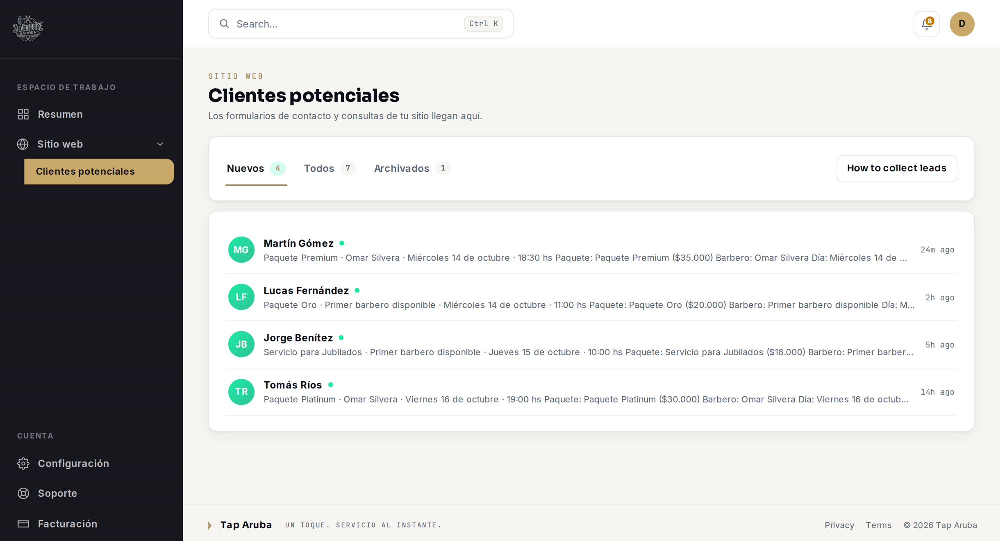
| Nuevos | Las reservas que todavía no abriste. Es donde empieza el dashboard. |
| Todos | Todas las reservas menos las archivadas. |
| Archivados | Las que ya atendiste y guardaste. |
En cada fila ves el nombre del cliente y el resumen de la reserva: paquete · barbero · día · hora. A la derecha está hace cuánto entró, en inglés: 5m ago es “hace 5 minutos”, 3h ago “hace 3 horas” y 2d ago “hace 2 días”.
| Archivar | La pasa a Archivados. No se pierde nada. |
| Restaurar | En Archivados, la devuelve a la lista. |
| Eliminar | La borra para siempre, y no se puede deshacer. Usalo solo para pruebas o mensajes basura. |
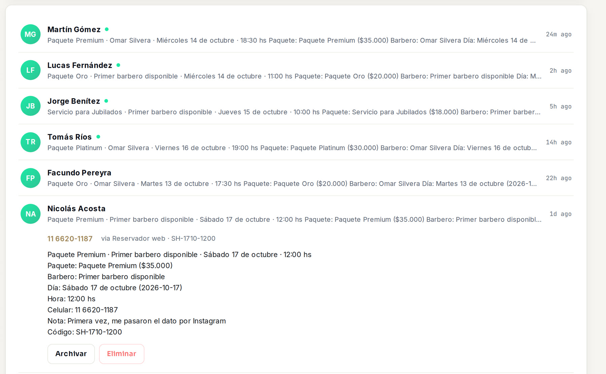
| Paquete | El que eligió, con el precio de ese momento. |
| Barbero | Omar Silvera, o “Primer barbero disponible” si le da igual. |
| Día y hora | El turno que pidió. |
| Celular | Si lo dejó. Si dice “no lo dejó”, el contacto es el WhatsApp desde donde te escriba. |
| Nota | Solo si escribió un comentario, por ejemplo “con barba”. |
| Código | El mismo que aparece en el WhatsApp, por ejemplo SH-1410-1100. |
Es lo primero que ves al entrar. Arriba elegís el período: 7 días, 14 días, 1 mes o 3 meses.
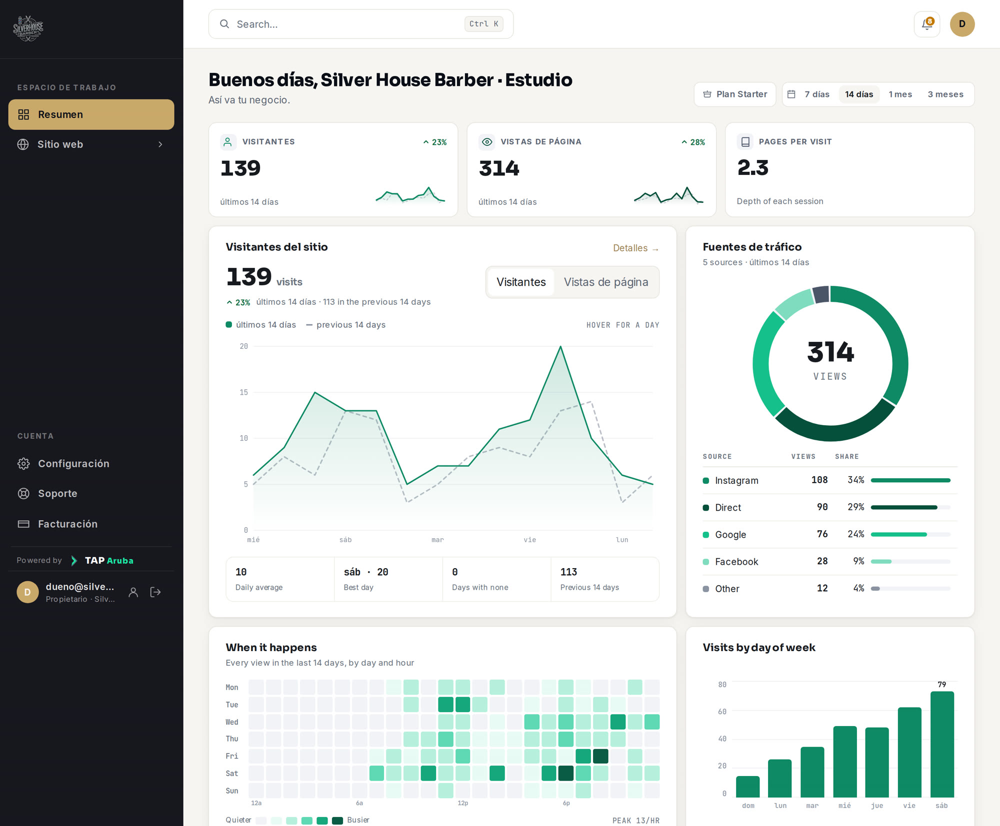
| Visitantes | Cuántas personas entraron a tu página. El porcentaje compara con el período anterior. |
| Vistas de página | Cuántas veces se abrió la página. Una misma persona puede abrirla varias veces. |
| Fuentes de tráfico | De dónde llegaron: Instagram, Google, Facebook o directo. |
| When it happens | “Cuándo pasa”: en qué días y horas entra más gente. Te sirve para elegir cuándo publicar en Instagram. |
| Actividad reciente | Las últimas reservas. Dice New lead, que quiere decir “nueva reserva”, y el nombre. |
Tocá Sitio web en el menú. Esta pantalla está en inglés y siempre muestra los últimos 30 días.
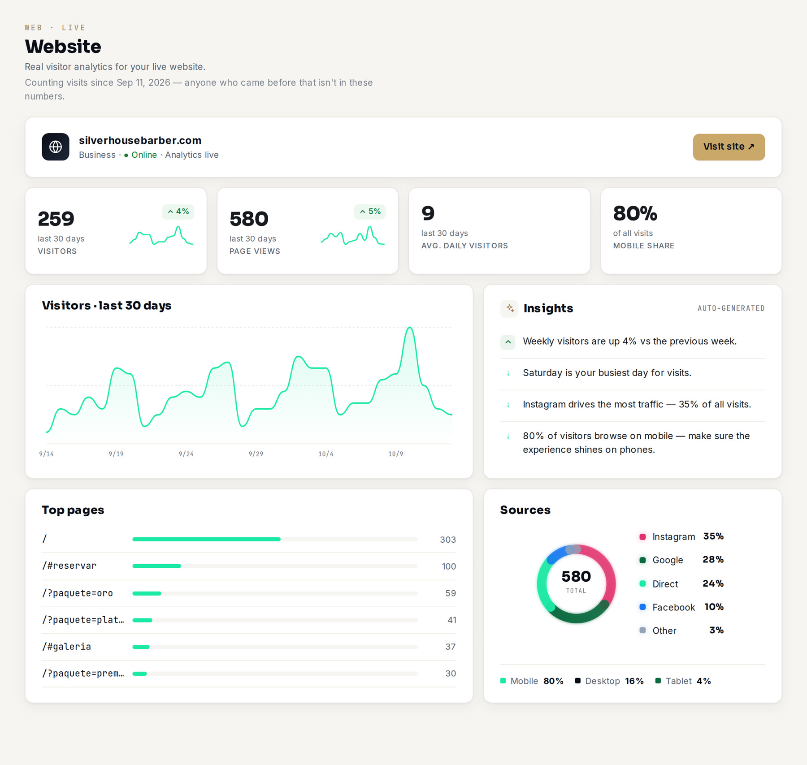
| Visitors | Visitantes: personas distintas que entraron. El porcentaje compara esta semana con la anterior. |
| Page views | Vistas de página: cuántas veces se abrió. |
| Avg. daily visitors | Promedio de visitantes por día. |
| Mobile share | Qué parte de las visitas fue desde el celular. |
| Top pages | Por qué link entraron. / es la página normal, /#reservar el link de Reservar y /?paquete=oro el link directo al Paquete Oro (capítulo 10). |
| Sources | De dónde vienen. Direct es que escribieron la dirección o tocaron el link en WhatsApp. Instagram, Google y Facebook son lo que parecen. |
Estos links abren tu página directo en el lugar justo. Usalos en la bio de Instagram, en historias, en estados de WhatsApp o cuando alguien te pregunta precios. En Top pages vas a ver cuál trae más gente.
| Tu página | silverhouse-barber-demo.vercel.app |
| Reservar | silverhouse-barber-demo.vercel.app/#reservar Abre directo el reservador. |
| Paquete Premium | silverhouse-barber-demo.vercel.app/?paquete=premium |
| Paquete Platinum | silverhouse-barber-demo.vercel.app/?paquete=platinum |
| Paquete Oro | silverhouse-barber-demo.vercel.app/?paquete=oro |
| Jubilados | silverhouse-barber-demo.vercel.app/?paquete=jubilados |
Con el link de un paquete, el cliente cae en el reservador con ese paquete ya elegido y arranca directo en el paso 2, el barbero.
El link de Reservar. Es el que más reservas trae.
Una foto de un corte con el sticker de link al paquete que usaste, por ejemplo Paquete Oro.
Cuando te preguntan precios por WhatsApp, mandá Tu página: ven todo y reservan solos.
El link de Jubilados para grupos del barrio o para los hijos que reservan por sus padres.
El dashboard funciona igual en el celular. El menú se abre con el botón ☰ de arriba a la izquierda.
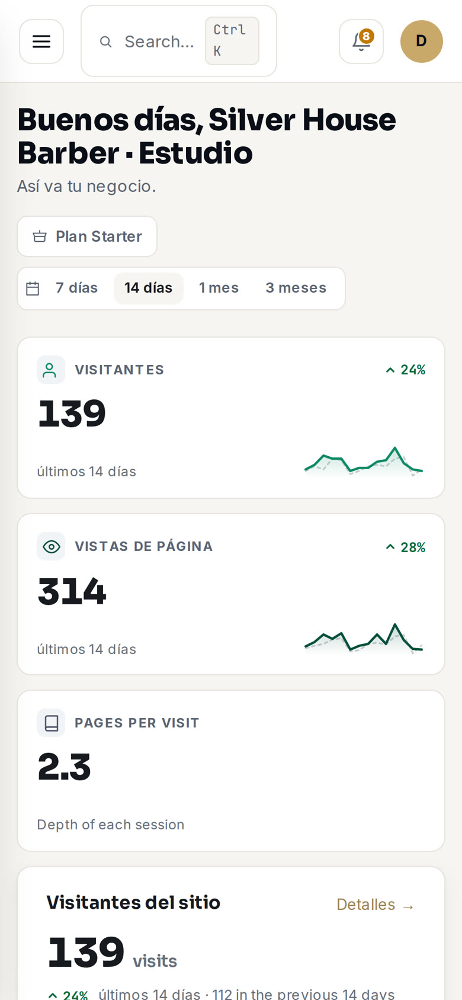
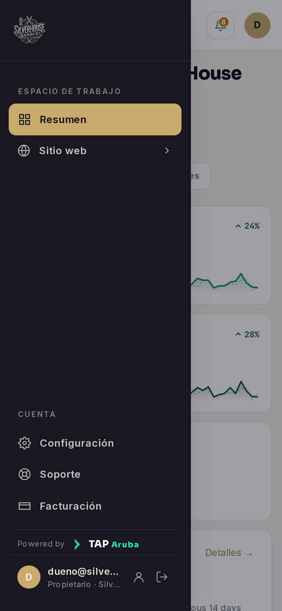
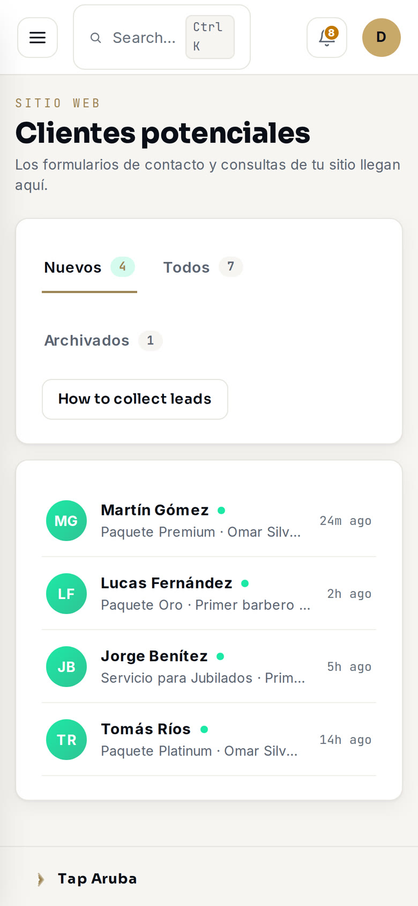
| iPhone | Abrí app.taparuba.com en Safari, tocá Compartir (el cuadrado con la flecha) y elegí Agregar a inicio. |
| Android | Abrí app.taparuba.com en Chrome, tocá los ⋮ de arriba a la derecha y elegí Agregar a la pantalla principal o Instalar app. |
Te queda un ícono de Tap Aruba en la pantalla del celular. Lo abrís y caés directo en tu dashboard.
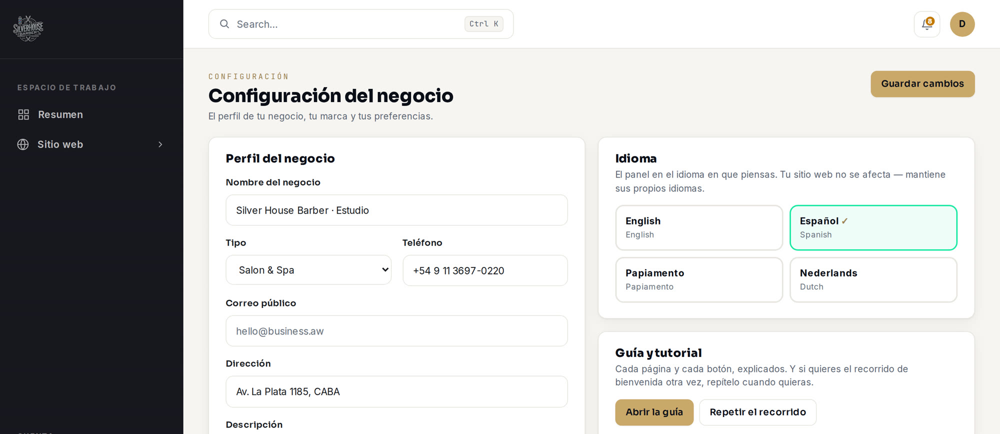
| Idioma | Español, inglés, papiamento o neerlandés. Cambia al instante en ese aparato. |
| Apariencia | Claro u Oscuro, también por aparato. |
| Perfil del negocio | Nombre, teléfono, correo, dirección y descripción. Son los datos del negocio dentro del dashboard. No cambian tu página web: para eso, mirá el capítulo 13. |
| Marca | El logo y el color que se ven en tu dashboard. Ya vienen puestos con los de Silver House: no hace falta tocarlos. |
| Guía y tutorial | Abrir la guía y Repetir el recorrido. |
Si cambiás algo de Perfil del negocio o Marca, tocá Guardar cambios arriba a la derecha.
Tocá tu foto o tus iniciales y elegí Tu perfil. Ahí cambiás tu nombre y tu contraseña (Update password). También podés activar la verificación en dos pasos (Two-factor authentication), que pide un código del celular además de la contraseña:
Los precios, horarios, fotos y textos de la página los cambia Tap Aruba. Escribinos por WhatsApp con lo que necesitás y lo cambiamos.
| Precios | El paquete y el precio nuevo. Por ejemplo: “Paquete Oro pasa a $22.000 desde el lunes”. |
| Qué incluye un paquete | El paquete y la lista nueva de servicios, con la duración. |
| Horarios | Días y horas de atención. Hoy son de lunes a sábado, de 9:00 a 20:00, y el último turno es a las 19:30. |
| Feriados y vacaciones | Las fechas en que no atendés, con unos días de anticipación, para que no se puedan reservar. |
| Barberos | Nombre y especialidad de quien se suma, para que aparezca en el paso 2 del reservador. |
| Fotos | Las fotos, con buena luz. Las mejores son de cortes terminados y del local. |
| Textos y reseñas | El texto nuevo, o la captura de una reseña de Google que quieras mostrar. |
| WhatsApp del negocio | El número nuevo, si cambia. Es a donde llegan las reservas. |
En Soporte tenés dos formas de hablar con Tap Aruba:
| +297 744 4271. Es lo más rápido. Respondemos en pocas horas. | |
| Ticket | + Nuevo ticket: escribís el asunto, los detalles y la prioridad, y tocás Submit ticket. Queda registrado en Tus tickets. |
| Correo | arubatap@gmail.com |
En Facturación ves tu plan y lo que incluye. Para cambiar de plan o consultar por un pago, tocá Cambiar plan o Pregunta de facturación y te llevamos a Soporte.
¿Cuando aparece en Clientes potenciales, el turno ya está confirmado?
No. Es la reserva que pidió el cliente. El turno queda confirmado cuando vos le respondés por WhatsApp.
Hay una reserva en el dashboard que nunca me llegó por WhatsApp. ¿Por qué?
El cliente tocó Confirmar por WhatsApp, pero después no tocó Enviar en WhatsApp. Si dejó su celular, escribile vos. Si no lo dejó, archivala.
¿Me llega un aviso cuando alguien reserva?
El aviso es el WhatsApp del cliente. El dashboard no manda notificaciones: lo nuevo lo ves en Nuevos y en la campanita cuando lo abrís o lo recargás.
Dos clientes eligieron el mismo horario. ¿Qué hago?
Respetá al primero que te escribió y al segundo proponele otro horario. Tenés las respuestas para copiar en el capítulo 6.
¿Puedo cerrar un día por feriado o vacaciones?
Sí. Avisanos las fechas con unos días de anticipación y las cerramos en la página.
El dashboard está en inglés. ¿Cómo lo paso a español?
Andá a Settings, después a Language, y tocá Español. Hay que hacerlo una vez en cada aparato. La pantalla de entrada y la de Sitio web siguen en inglés: en los capítulos 3 y 9 tenés qué significa cada cosa.
¿Qué pasa si elimino una reserva?
Se borra para siempre. Si solo querés sacarla de la lista, usá Archivar.
¿Mis propias visitas a la página cuentan?
Sí. Cada aparato cuenta como un solo visitante, aunque abra la página muchas veces. Así que tu celular suma uno, y nada más.
Me olvidé la contraseña.
En la pantalla de entrada escribí tu correo y tocá Forgot your password?. Te llega un mail para crear una nueva.
¿Puede entrar otra persona del equipo?
Por ahora el dashboard tiene un solo acceso, el tuyo. Si querés que alguien más lo vea, consultanos.
¿Con quién hablo si algo no funciona?
Con Tap Aruba, por WhatsApp al +297 744 4271. Mandanos una captura de pantalla de lo que ves y lo resolvemos.